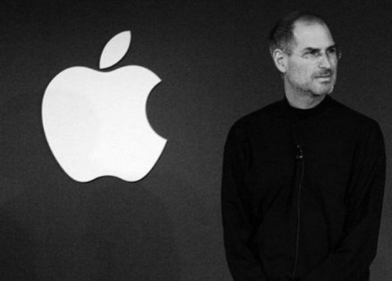

孔小月的个人博客
乔布斯临终遗言首度公开，震撼灵魂!
作为一个世界500强公司的总裁，我曾经叱咤商界，无往不胜，在别人眼里，我的人生当然是成功的典范。但是除了工作，我的乐趣并不多，到后来，财富于我已经变成一种习惯的事实，正如我肥胖的身体——都是多余的东西组成。

此刻，在病床上，我频繁地回忆起我自己的一生，发现曾经让我感到无限得意的所有社会名誉和财富，在即将到来的死亡面前已全部变得暗淡无光，毫无意义了。
我也在深夜里多次反问自己，如果我生前的一切被死亡重新估价后，已经失去了价值，那么我现在最想要的是什么，即我一生的金钱和名誉都没能给我的是什么?有没有?
黑暗中，我看着那些金属检测仪器发出的幽绿的光和吱吱的声响，似乎感到死神温热的呼吸正向我靠拢。
现在我明白了，人的一生只要有够用的财富，就该去追求其他与财富无关的，应该是更重要的东西，也许是感情，也许是艺术，也许只是一个儿时的梦想。
无休止的追求财富只会让人变得贪婪和无趣，变成一个变态的怪物——正如我一生的写照。
上帝造人时，给我们以丰富的感官，是为了让我们去感受他预设在所有人心底的爱，而不是财富带来的虚幻。
我生前赢得的所有财富我都无法带走，能带走的只有记忆中沉淀下来的纯真的感动以及和物质无关的爱和情感。它们无法否认也不会自己消失，它们才是人生真正的财富。
无论是否真是乔布斯所感悟，但确实对我们活着的人有启示作用。诚如布斯在斯坦福大学演讲时说：“当每天早上面对镜子，如果这是你生命中的最后一天，你将会去选择什么。
评论：